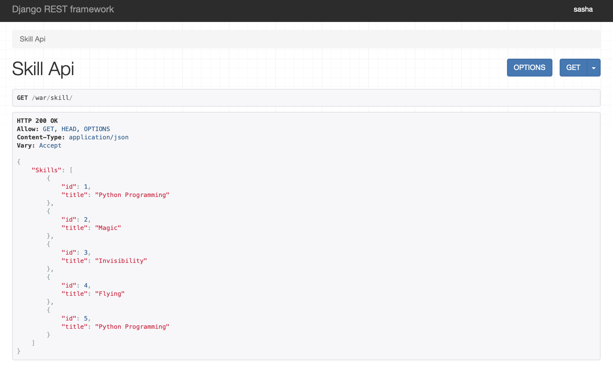
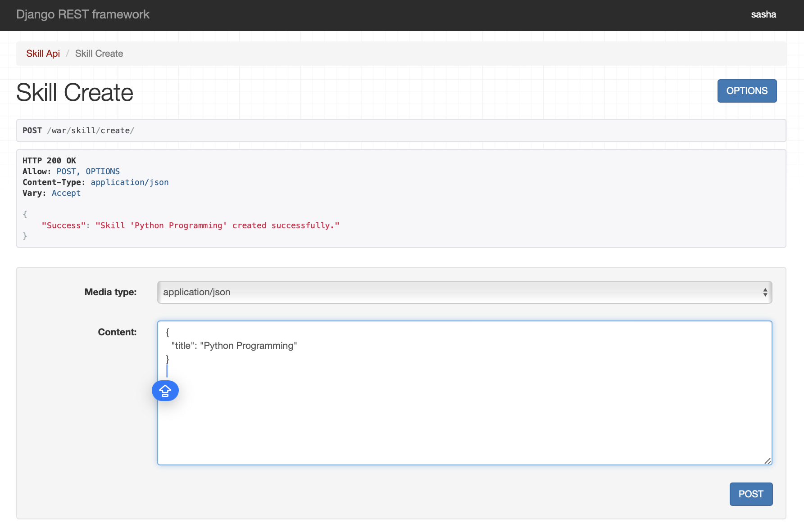
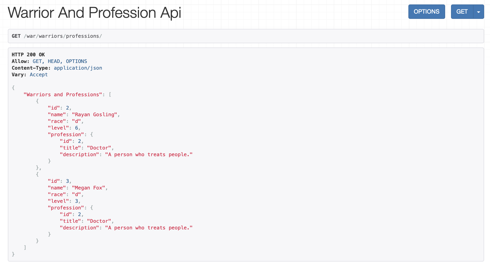
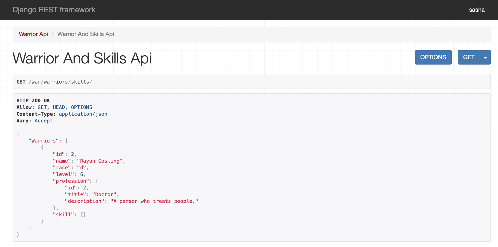
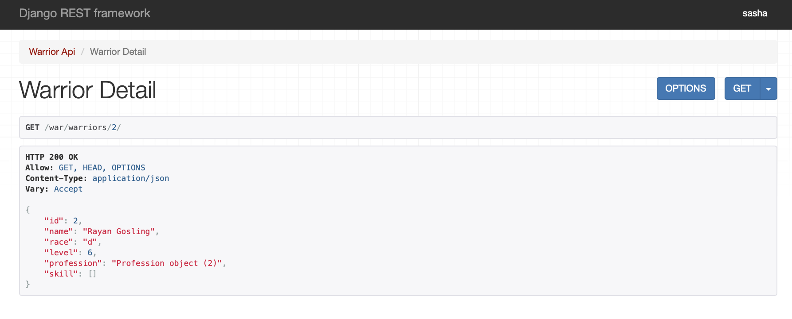
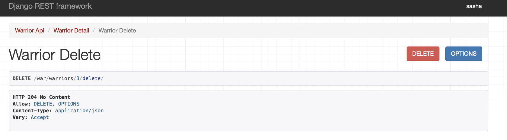
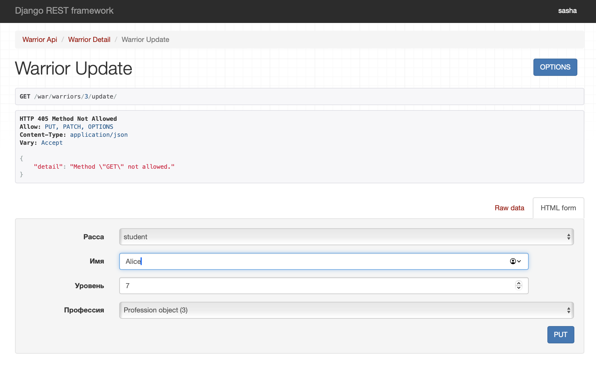
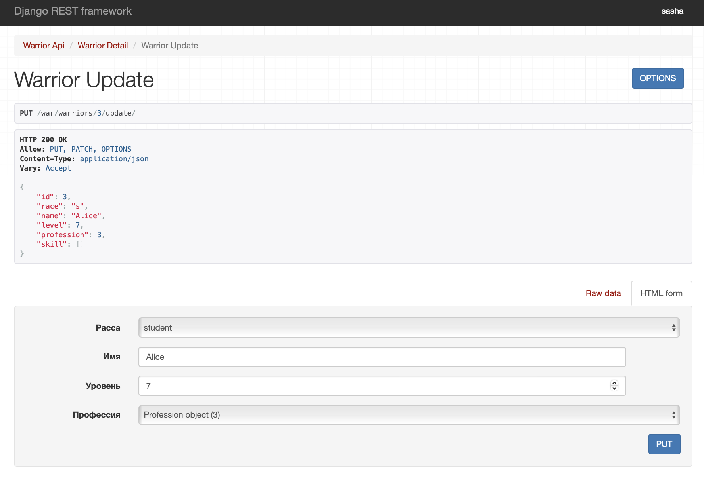

Django rest framework
Модели:
from django.db import models
class Warrior(models.Model):
race_types = (
('s', 'student'),
('d', 'developer'),
('t', 'teamlead'),
)
race = models.CharField(max_length=1, choices=race_types, verbose_name='Расса')
name = models.CharField(max_length=120, verbose_name='Имя')
level = models.IntegerField(verbose_name='Уровень', default=0)
skill = models.ManyToManyField('Skill', verbose_name='Умения', through='SkillOfWarrior',
related_name='warrior_skils')
profession = models.ForeignKey('Profession', on_delete=models.CASCADE, verbose_name='Профессия',
blank=True, null=True)
class Profession(models.Model):
title = models.CharField(max_length=120, verbose_name='Название')
description = models.TextField(verbose_name='Описание')
class Skill(models.Model):
title = models.CharField(max_length=120, verbose_name='Наименование')
def __str__(self):
return self.title
class SkillOfWarrior(models.Model):
skill = models.ForeignKey('Skill', verbose_name='Умение', on_delete=models.CASCADE)
warrior = models.ForeignKey('Warrior', verbose_name='Воин', on_delete=models.CASCADE)
level = models.IntegerField(verbose_name='Уровень освоения умения')
Задание 1. Реализовать ендпоинты для добавления и просмотра скилов.
Сначала создаем сериализатор для скилов:
class SkillSerializer(serializers.ModelSerializer):
class Meta:
model = Skill
fields = ['id', 'title']
Теперь создадим необходимые представления:
class SkillAPIView(APIView):
def get(self, request):
skills = Skill.objects.all()
serializer = SkillSerializer(skills, many=True)
return Response({"Skills": serializer.data})
class SkillCreateView(APIView):
def post(self, request):
serializer = SkillSerializer(data=request.data)
if serializer.is_valid(raise_exception=True):
skill_saved = serializer.save()
return Response(
{"Success": f"Skill '{skill_saved.title}' created successfully."}
)
return Response(serializer.errors, status=400)
Эдпойнты:
from django.urls import path
from .views import *
app_name = "warriors_app"
urlpatterns = [
path('skill/', SkillAPIView.as_view(), name='skill-list'),
path('skill/create/', SkillCreateView.as_view(), name='skill-create'),
]
Выводим все скиллы:

Добавляем новый скилл:
Задание 2.
Реализовать ендпоинты: * Вывод полной информации о всех войнах и их профессиях (в одном запросе). * Вывод полной информации о всех войнах и их скилах (в одном запросе). * Вывод полной информации о войне (по id), его профессиях и скилах. * Удаление война по id. * Редактирование информации о войне.
- Вывод инфо о войнах и профессиях: Реализуем сериализатор:
class WarriorAndProfessionSerializer(serializers.ModelSerializer):
profession = ProfessionCreateSerializer()
class Meta:
model = Warrior
fields = ['id', 'name', 'race', 'level', 'profession']
Реализуем представление:
class WarriorAndProfessionAPIView(APIView):
def get(self, request):
warriors = Warrior.objects.all()
serializer = WarriorAndProfessionSerializer(warriors, many=True)
return Response({"Warriors and Professions": serializer.data})
Результат:

- Вывод инфо о войнах и скиллах: Реализуем сериализатор:
class WarriorAndSkillSerializer(serializers.ModelSerializer):
profession = ProfessionCreateSerializer()
skill = SkillOfWarriorSerializer(source='skillofwarrior_set', many=True)
class Meta:
model = Warrior
fields = ['id', 'name', 'race', 'level', 'profession', 'skill']
Реализуем представление:
class WarriorAndSkillsAPIView(APIView):
def get(self, request):
warriors = Warrior.objects.prefetch_related('skill').all()
serializer = WarriorAndSkillSerializer(warriors, many=True)
return Response({"Warriors": serializer.data})
Результат:

- Вывод полной инфо о войне по id Реализуем сериализатор:
class WarriorDetailSerializer(serializers.ModelSerializer):
profession = serializers.StringRelatedField()
skill = SkillOfWarriorSerializer(many=True)
class Meta:
model = Warrior
fields = ['id', 'name', 'race', 'level', 'profession', 'skill']
Реализуем представление:
class WarriorDetailView(RetrieveAPIView):
queryset = Warrior.objects.all()
serializer_class = WarriorDetailSerializer
Результат:

- Удаление война по id: Серилизатор война:
class WarriorSerializer(serializers.ModelSerializer):
class Meta:
model = Warrior
fields = "__all__"
Реализуем представление:
class WarriorDeleteView(DestroyAPIView):
queryset = Warrior.objects.all()
serializer_class = WarriorSerializer
Результат:

- Редактирование инфо о войне: Серилизатор война:
class WarriorSerializer(serializers.ModelSerializer):
class Meta:
model = Warrior
fields = "__all__"
Реализуем представление:
class WarriorUpdateView(UpdateAPIView):
queryset = Warrior.objects.all()
serializer_class = WarriorSerializer
Результат:

